## libraries
library(ggplot2)
library(patchwork) # combine plots with the + and / signs
library(marginaleffects)
## visual theme
theme_set(theme_minimal())
okabeito <- c('#E69F00', '#56B4E9', '#009E73', '#F0E442', '#0072B2', '#D55E00', '#CC79A7', '#999999', '#000000')
options(ggplot2.discrete.fill = okabeito)
options(ggplot2.discrete.colour = okabeito)
options(width = 1000)
## download data
dat <- get_dataset("penguins", "palmerpenguins")
mod <- lm(body_mass_g ~ flipper_length_mm * species * bill_length_mm + island, data = dat)绘图
Plots · marginaleffects 官方文档中译
来源：Vincent Arel-Bundock，marginaleffects 官方文档 · Plots （GitHub 仓库，源文件
website/bonus/plot.qmd，revision870f15a0）。 网站内容 © 2025 Vincent Arel-Bundock, All Rights Reserved；marginaleffects软件代码依 GPL-3 许可。 本页为中文翻译，非原文，经原作者授权翻译并发布。 本页的 R 代码块由本站在渲染时真实执行；Python 代码块未在本站执行（本机 Quarto 未配置 Jupyter，reticulate 也未配置 Python），仅作静态展示，页面中不含由这些 Python 代码生成的输出。 原文中指向原书章节的交叉引用已改写为指向 marginaleffects.com 的链接（那些章节不在本次翻译范围内）。
marginaleffects 包提供了三个灵活的函数，用于绘制估计值和展示交互作用。
plot_predictions()plot_comparisons()plot_slopes()
这些函数可以用来绘制两类量：
- 条件估计值：
- 在一组有实质意义的预测变量取值网格上计算出的估计值。
- 这相当于在
predictions()、comparisons()或slopes()调用中，把newdata参数与datagrid()函数一起使用。
- 边际估计值：
- 在原始数据上计算、但按子组求平均后的估计值。
- 这相当于在
predictions()、comparisons()或slopes()调用中，把newdata参数与datagrid()函数一起使用。
首先，我们下载数据并拟合一个模型：
import statsmodels.formula.api as smf
from marginaleffects import *
from plotnine import *
import polars as pl
# visual theme
theme_set(theme_minimal())
dat = pl.read_csv("https://vincentarelbundock.github.io/Rdatasets/csv/palmerpenguins/penguins.csv")
dat = dat.with_columns(pl.col('species').cast(pl.Categorical), pl.col('island').cast(pl.Categorical))
mod = smf.ols(
"body_mass_g ~ flipper_length_mm * species * bill_length_mm + island",
data = dat.to_pandas()).fit()预测值
条件预测值
当预测值是在用户指定的取值网格上做出的时候，我们称它为「条件」预测值。例如，我们针对不同的脚蹼长度和不同的物种来预测企鹅的体重：
pre <- predictions(mod, newdata = datagrid(flipper_length_mm = c(172, 231), species = unique))
pre
#>
#> flipper_length_mm species Estimate Std. Error z Pr(>|z|) S 2.5 % 97.5 %
#> 172 Adelie 3859 204 18.9 <0.001 263.0 3460 4259
#> 172 Chinstrap 3146 234 13.5 <0.001 134.6 2688 3604
#> 172 Gentoo 2545 369 6.9 <0.001 37.5 1822 3268
#> 231 Adelie 4764 362 13.2 <0.001 128.9 4054 5474
#> 231 Chinstrap 4086 469 8.7 <0.001 58.1 3166 5006
#> 231 Gentoo 5597 155 36.0 <0.001 940.9 5292 5901
#>
#> Type: responsepre = predictions(
mod,
newdata = datagrid(
flipper_length_mm = [172, 231],
species = dat["species"].unique(),
model = mod)
)
preplot_predictions() 函数的 condition 参数可以让我们更方便地构造有实质意义的预测变量取值网格：
plot_predictions(mod, condition = c("flipper_length_mm", "species"))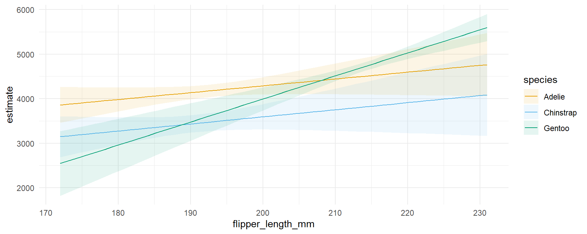
plot_predictions(mod, condition = ["flipper_length_mm", "species"])注意，x 轴两端的取值与上面给出的数值结果是对应的。例如，脚蹼长 231mm 的 Gentoo 企鹅的预测结局是 5597。
我们还可以加入第 3 个条件变量、指定想要考察的取值、提供 R 函数来计算汇总量，以及使用若干表示常用参考值的字符串快捷方式（“threenum”、“minmax”、“quartile” 等）：
plot_predictions(
mod,
condition = list(
"flipper_length_mm" = 180:220,
"bill_length_mm" = "threenum",
"species" = unique))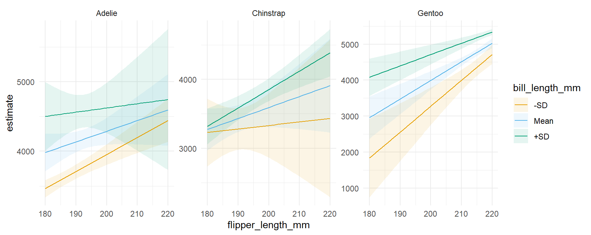
plot_predictions(
mod,
condition = {
"flipper_length_mm": list(range(180, 221)),
"bill_length_mm": "threenum",
"species": dat["species"].unique(),
}
)更多信息参见 ?plot_predictions。
边际预测值
当预测值是两步过程的结果时，我们称它为「边际」预测值：（1）对原始数据集中每一个观测单元做预测，（2）在一个或多个分类预测变量上对预测值求平均。例如：
predictions(mod, by = "species")
#>
#> species Estimate Std. Error z Pr(>|z|) S 2.5 % 97.5 %
#> Adelie 3701 27.2 136.1 <0.001 Inf 3647 3754
#> Chinstrap 3733 40.5 92.2 <0.001 Inf 3654 3812
#> Gentoo 5076 30.1 168.5 <0.001 Inf 5017 5135
#>
#> Type: response我们可以用对应的命令把这些预测值画出来：
plot_predictions(mod, by = "species")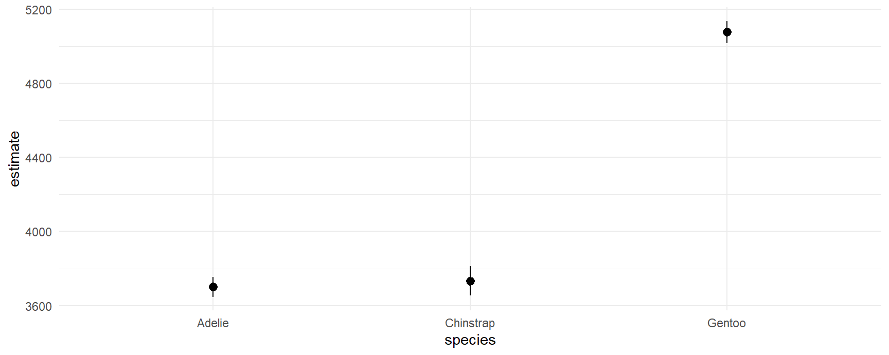
我们也可以在不同变量的交叉上做预测：
predictions(mod, by = c("species", "island"))
#>
#> species island Estimate Std. Error z Pr(>|z|) S 2.5 % 97.5 %
#> Adelie Biscoe 3710 50.4 73.7 <0.001 Inf 3611 3808
#> Adelie Dream 3688 44.6 82.6 <0.001 Inf 3601 3776
#> Adelie Torgersen 3706 46.8 79.2 <0.001 Inf 3615 3798
#> Chinstrap Dream 3733 40.5 92.2 <0.001 Inf 3654 3812
#> Gentoo Biscoe 5076 30.1 168.5 <0.001 Inf 5017 5135
#>
#> Type: response注意某些物种只生活在特定的岛屿上。用图来看：
plot_predictions(mod, by = c("species", "island"))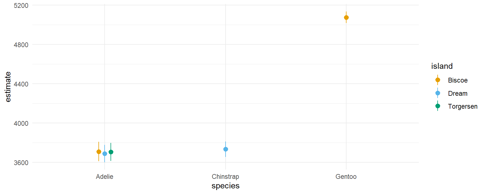
比较
条件比较
条件比较的语法和条件预测值的语法相同，区别只是我们现在需要用一个额外的参数来指定所关心的变量：
comparisons(mod,
variables = "flipper_length_mm",
newdata = datagrid(flipper_length_mm = c(172, 231), species = unique))
#>
#> flipper_length_mm species Estimate Std. Error z Pr(>|z|) S 2.5 % 97.5 %
#> 172 Adelie 15.3 9.25 1.66 0.0976 3.4 -2.81 33.5
#> 172 Chinstrap 15.9 11.37 1.40 0.1609 2.6 -6.34 38.2
#> 172 Gentoo 51.7 8.70 5.95 <0.001 28.5 34.68 68.8
#> 231 Adelie 15.3 9.25 1.66 0.0976 3.4 -2.81 33.5
#> 231 Chinstrap 15.9 11.37 1.40 0.1610 2.6 -6.34 38.2
#> 231 Gentoo 51.7 8.70 5.95 <0.001 28.5 34.68 68.8
#>
#> Term: flipper_length_mm
#> Type: response
#> Comparison: +1
plot_comparisons(mod,
variables = "flipper_length_mm",
condition = c("bill_length_mm", "species"))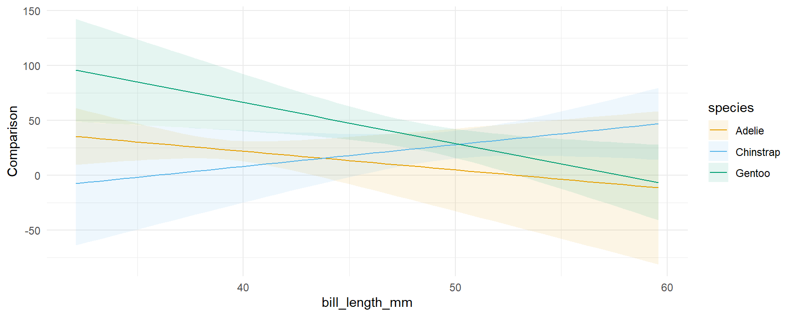
我们可以像使用 comparisons() 函数的 variables 参数那样，指定自定义的比较。例如，看看当 flipper_length_mm 增加 1 个标准差或增加 10mm 时，预测结局会发生什么变化：
plot_comparisons(mod,
variables = list("flipper_length_mm" = "sd"),
condition = c("bill_length_mm", "species")) +
plot_comparisons(mod,
variables = list("flipper_length_mm" = 10),
condition = c("bill_length_mm", "species"))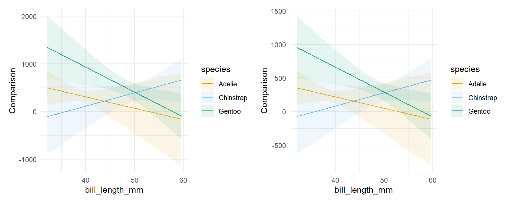
注意上面两幅图的纵轴刻度不同，这反映出我们左图画的是变化 1 个标准差的效应，而右图画的是变化 10 个单位的效应。
和 comparisons() 函数一样，plot_comparisons() 也是一个非常强大的工具，因为它让我们能够计算和展示各种自定义的比较，比如差、比、优势、提升度，以及预测结局的任意函数。例如，如果我们想画出不同企鹅物种预测体重之比，可以这样做：
plot_comparisons(mod,
variables = "species",
condition = "bill_length_mm",
comparison = "ratio")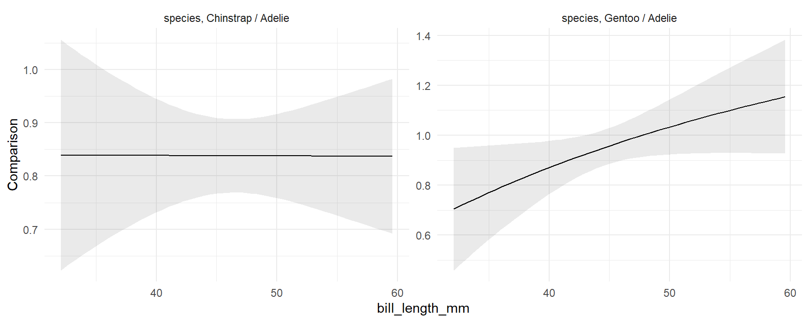
左图显示，Chinstrap 与 Adelie 体重之比大致是个常数，略高于 0.8。右图显示，Gentoo 与 Adelie 体重之比取决于它们的喙长。对喙较短的鸟来说，Gentoo 的体重似乎比 Adelie 小；对喙较长的鸟来说，Gentoo 似乎比 Adelie 更重，不过原假设下的比值（1）并没有落在置信区间之外。
边际比较
和上面一样，我们也可以按子组展示边际比较：
plot_comparisons(mod,
variables = "flipper_length_mm",
by = "species") +
plot_comparisons(mod,
variables = "flipper_length_mm",
by = c("species", "island"))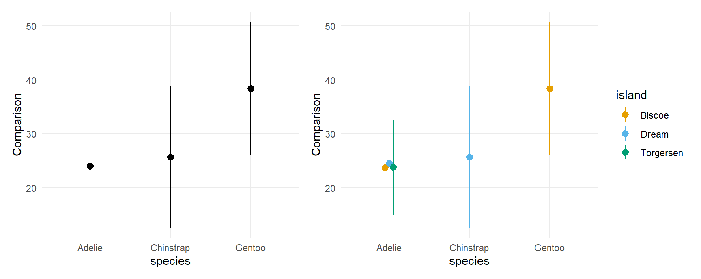
一次画多个对比：
plot_comparisons(mod,
variables = c("flipper_length_mm", "bill_length_mm"),
by = c("species", "island"))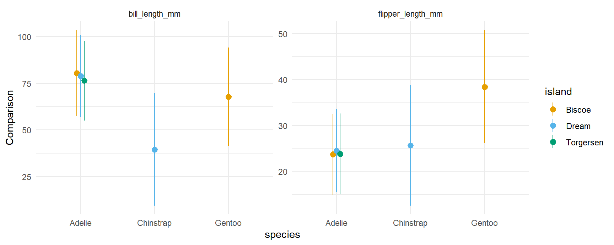
斜率
如果你读过上面几节，plot_slopes() 函数的行为应该不会让你意外。下面给出两个例子，计算并展示体重关于喙长的弹性：
## conditional
plot_slopes(mod,
variables = "bill_length_mm",
slope = "eyex",
condition = c("species", "island"))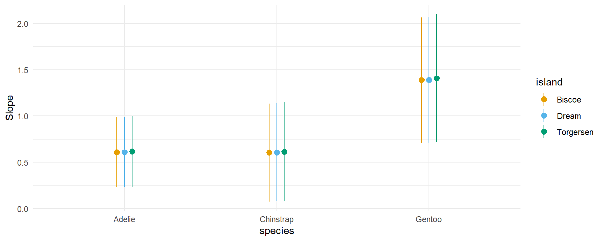
## marginal
plot_slopes(mod,
variables = "bill_length_mm",
slope = "eyex",
by = c("species", "island"))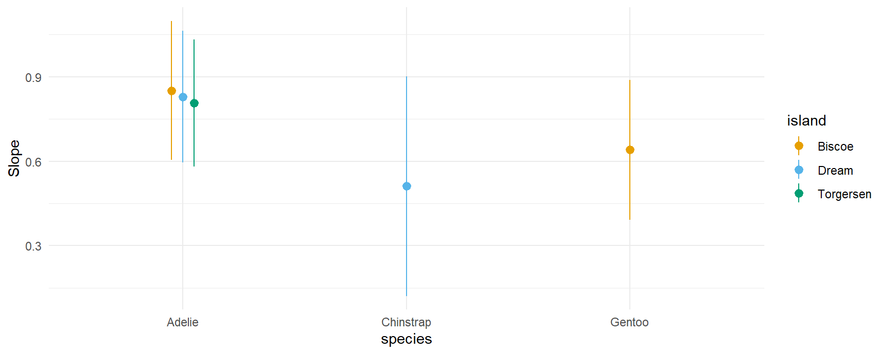
下面是一个边际效应（也叫「斜率」或「偏导数」）图的例子，对应的模型在连续变量之间带有乘性交互：
mod2 <- lm(mpg ~ wt * qsec * factor(gear), data = mtcars)
plot_slopes(mod2, variables = "qsec", condition = c("wt", "gear"))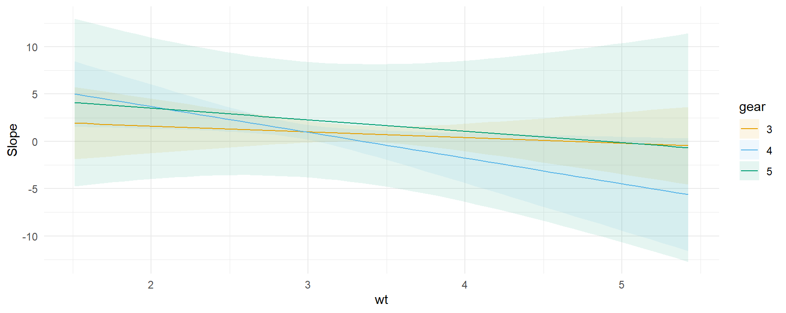
不确定性估计
和本包中其他所有函数一样，plot_*() 系列函数也有 conf_level 参数和 vcov 参数，可以用来控制置信区间的大小以及所用标准误的类型：
plot_slopes(mod,
variables = "bill_length_mm", condition = "flipper_length_mm") +
ylim(c(-150, 200)) +
## clustered standard errors
plot_slopes(mod,
vcov = ~island,
variables = "bill_length_mm", condition = "flipper_length_mm") +
ylim(c(-150, 200)) +
## alpha level
plot_slopes(mod,
conf_level = .8,
variables = "bill_length_mm", condition = "flipper_length_mm") +
ylim(c(-150, 200))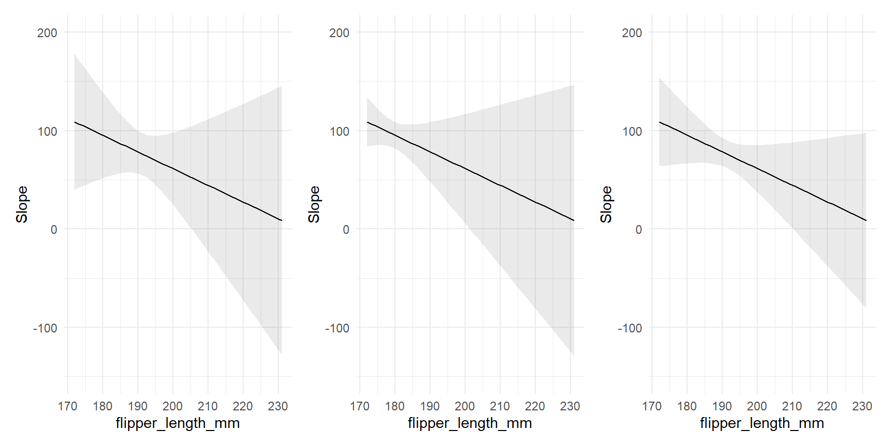
自定义
本包绘图函数的一个非常有用的特性是：它们返回的是普通的 ggplot2 对象。因此我们可以随心所欲地自定义它们，既可以直接用 ggplot2，也可以用众多为扩展其功能而设计的包之一：
library(ggrepel)
mt <- mtcars
mt$label <- row.names(mt)
mt$cyl <- factor(mt$cyl)
mod <- lm(mpg ~ hp * cyl, data = mt)
plot_predictions(mod, condition = c("hp", "cyl"), points = .5, rug = TRUE, vcov = FALSE) +
geom_text_repel(aes(x = hp, y = mpg, label = label),
data = subset(mt, hp > 250),
nudge_y = 2) +
theme_classic()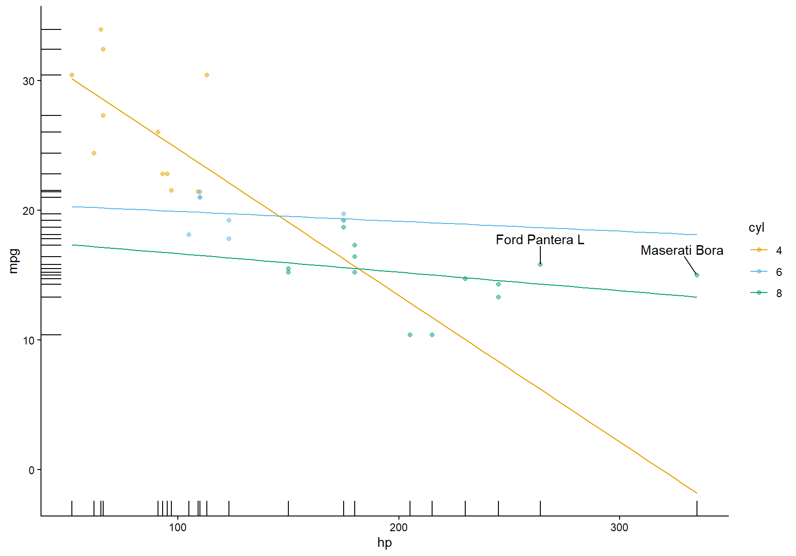
所有绘图函数都适用于 marginaleffects 包支持的全部模型，因此我们也可以画出 logistic 回归模型的结果。下面这幅图展示的是泰坦尼克号上不同年龄、不同船票等级乘客的生还概率：
library(ggdist)
library(ggplot2)
dat <- get_dataset("Titanic", "Stat2Data")
mod <- glm(Survived ~ Age * SexCode * PClass, data = dat, family = binomial)
plot_predictions(mod, condition = c("Age", "PClass")) +
geom_dots(
alpha = .8,
scale = .3,
pch = 18,
data = dat, aes(
x = Age,
y = Survived,
side = ifelse(Survived == 1, "bottom", "top")))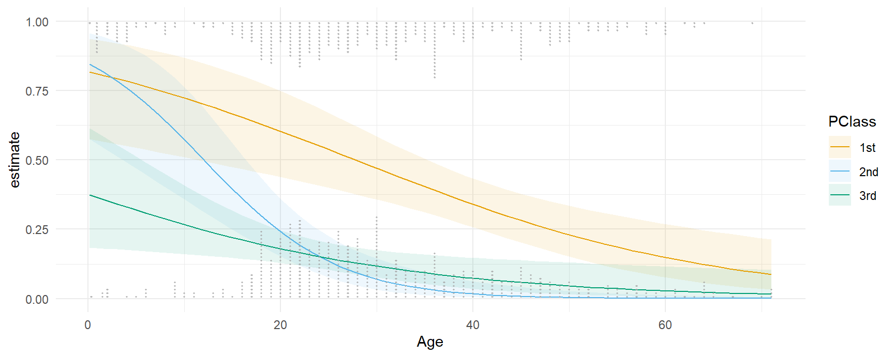
感谢 Andrew Heiss，这幅图的灵感来自于他。
设计有效的数据可视化，需要针对具体情境和数据做大量自定义。marginaleffects 的绘图函数提供了一种强大的方式，让我们能在图和模型之间快速迭代，但它们显然无法支持用户可能想要的所有功能。所幸，用 slopes 系列函数生成数据集、再把这些数据喂给 ggplot2 或任何其他数据可视化工具，是非常容易的。只需使用 draw 参数：
p <- plot_predictions(mod, condition = c("Age", "PClass"), draw = FALSE)
head(p)
#> rowid estimate p.value s.value conf.low conf.high SexCode Survived Age PClass df
#> 1 1 0.8169481 0.01398980 6.159481 0.5751384 0.9363604 0 0 0.17000 1st Inf
#> 2 2 0.8460749 0.01719013 5.862276 0.5750040 0.9571390 0 0 0.17000 2nd Inf
#> 3 3 0.3743476 0.30356429 1.719926 0.1836114 0.6141637 0 0 0.17000 3rd Inf
#> 4 4 0.8049295 0.01596447 5.968992 0.5657542 0.9289214 0 0 1.61551 1st Inf
#> 5 5 0.8170027 0.02633314 5.246977 0.5438874 0.9435524 0 0 1.61551 2nd Inf
#> 6 6 0.3573635 0.21423192 2.222755 0.1805140 0.5840004 0 0 1.61551 3rd Inf这让我们可以方便地把数据传给其他函数，比如很有用的 ggdist 和 distributional 包中的那些函数：
library(ggdist)
library(distributional)
plot_slopes(mod, variables = "SexCode", condition = c("Age", "PClass"), type = "link", draw = FALSE) |>
ggplot() +
stat_lineribbon(aes(
x = Age,
ydist = dist_normal(mu = estimate, sigma = std.error),
fill = PClass),
alpha = 1 / 4)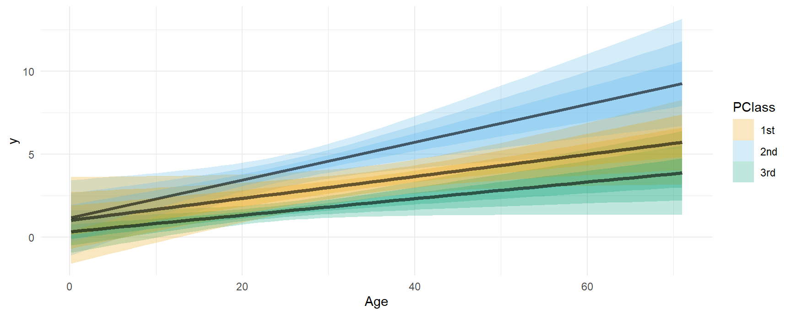
拟合与平滑
我们可以用 ggplot2 包的 geom_smooth() 函数，把模型预测与拟合线和平滑曲线作比较：
dat <- get_dataset("Titanic", "Stat2Data")
mod <- glm(Survived ~ Age * PClass, data = dat, family = binomial)
plot_predictions(mod, condition = c("Age", "PClass")) +
geom_smooth(data = dat, aes(Age, Survived), method = "lm", se = FALSE, color = "black") +
geom_smooth(data = dat, aes(Age, Survived), se = FALSE, color = "black")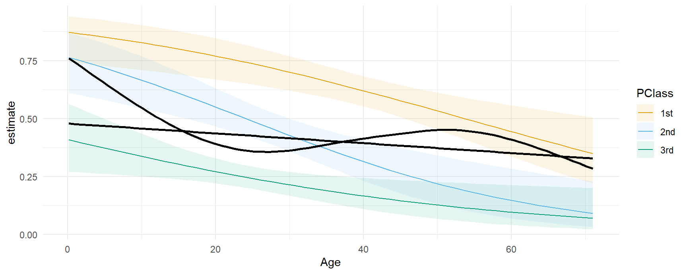
分组与分类结局
在某些模型中，marginaleffects 函数会为不同的组给出不同的估计值，比如分类结局的情形。例如，
library(MASS)
mod <- polr(factor(gear) ~ mpg + hp, data = mtcars)
predictions(mod)
#>
#> Group Estimate Std. Error z Pr(>|z|) S 2.5 % 97.5 %
#> 3 0.5316 0.1127 4.72 <0.001 18.7 0.3107 0.753
#> 3 0.5316 0.1127 4.72 <0.001 18.7 0.3107 0.753
#> 3 0.4492 0.1200 3.74 <0.001 12.4 0.2140 0.684
#> 3 0.4944 0.1111 4.45 <0.001 16.8 0.2765 0.712
#> 3 0.4213 0.1142 3.69 <0.001 12.1 0.1973 0.645
#> --- 86 rows omitted. See ?print.marginaleffects ---
#> 5 0.6894 0.1957 3.52 <0.001 11.2 0.3059 1.073
#> 5 0.1650 0.1290 1.28 0.2009 2.3 -0.0878 0.418
#> 5 0.1245 0.0698 1.78 0.0744 3.7 -0.0123 0.261
#> 5 0.3779 0.3243 1.17 0.2439 2.0 -0.2578 1.014
#> 5 0.0667 0.0458 1.46 0.1455 2.8 -0.0231 0.157
#> Type: probs在得到的数据框中，group 列标识的是分类响应变量的各个水平。
我们可以像前面那样绘制这些估计值：把 group 指定为条件变量之一，或者把该列加到 facet_wrap() 调用中：
plot_predictions(mod, condition = c("mpg", "group"), type = "probs", vcov = FALSE)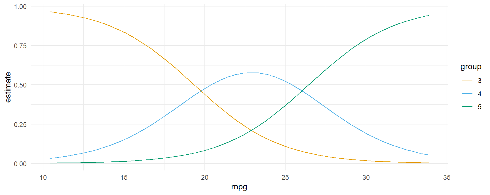
plot_predictions(mod, condition = "mpg", type = "probs", vcov = FALSE) +
facet_wrap(~ group)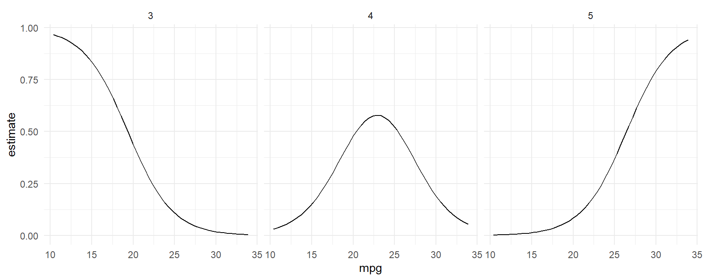
plot() 与 marginaleffects 对象
有些用户可能会想对 marginaleffects 生成的对象调用 plot()。这样做会产生一条信息明确的报错，就像下面这样：
mod <- lm(mpg ~ hp * wt * factor(cyl), data = mtcars)
p <- predictions(mod)
plot(p)
#> Error: Please use the `plot_predictions()` function.出现这个错误的原因是用户的请求不够明确。marginaleffects 能计算的量太多了，因此当用户只是简单地调用 plot() 时，并不清楚他们想要什么。而增加若干新参数又会与主要的绘图函数相冲突，还可能造成混淆。因此 marginaleffects 的开发者决定只支持一条主要的绘图路径：plot_predictions()、plot_comparisons() 和 plot_slopes()。
话虽如此，还是有必要提醒用户：marginaleffects 的所有输出都是标准的「tidy」数据框。虽然它们打印到控制台时经过了美化，但所有列都可以用标准的 R 运算符访问。例如：
p <- avg_predictions(mod, by = "cyl")
p
#>
#> cyl Estimate Std. Error z Pr(>|z|) S 2.5 % 97.5 %
#> 4 26.7 0.695 38.4 <0.001 Inf 25.3 28.0
#> 6 19.7 0.871 22.7 <0.001 375.1 18.0 21.5
#> 8 15.1 0.616 24.5 <0.001 438.2 13.9 16.3
#>
#> Type: response
p$estimate
#> [1] 26.66364 19.74286 15.10000
p$std.error
#> [1] 0.6951236 0.8713835 0.6161612
p$conf.low
#> [1] 25.30122 18.03498 13.89235这让我们可以非常方便地用标准绘图函数把所有结果画出来：
plot_predictions(mod, by = "cyl")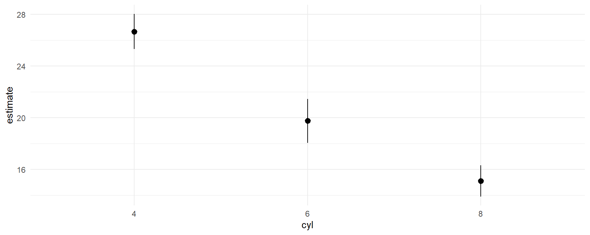
plot(p$cyl, p$estimate)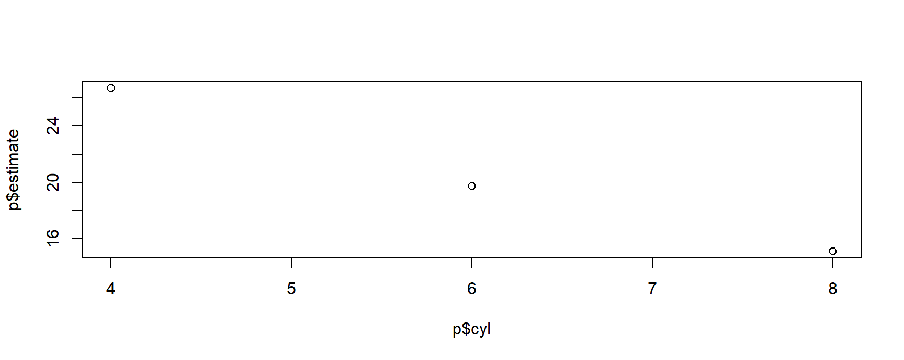
ggplot(p, aes(x = cyl, y = estimate, ymin = conf.low, ymax = conf.high)) +
geom_pointrange()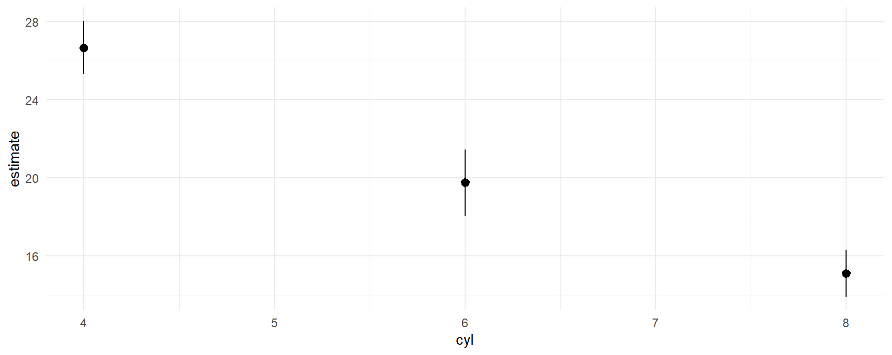